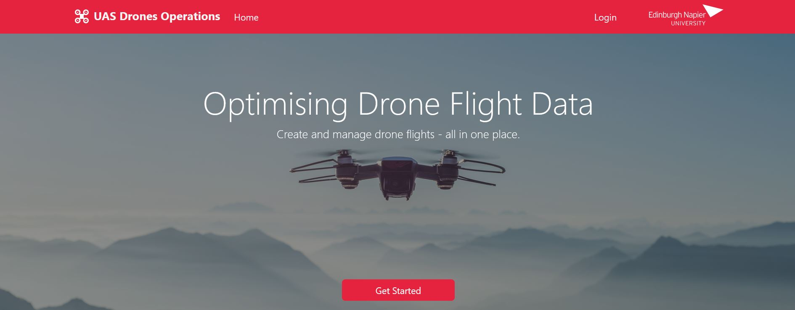
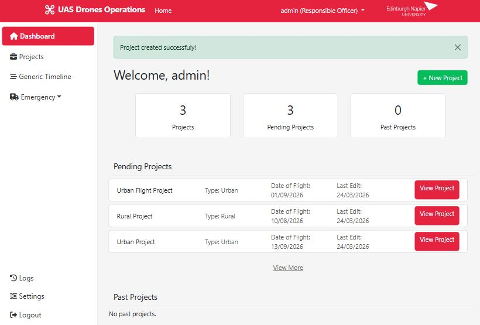
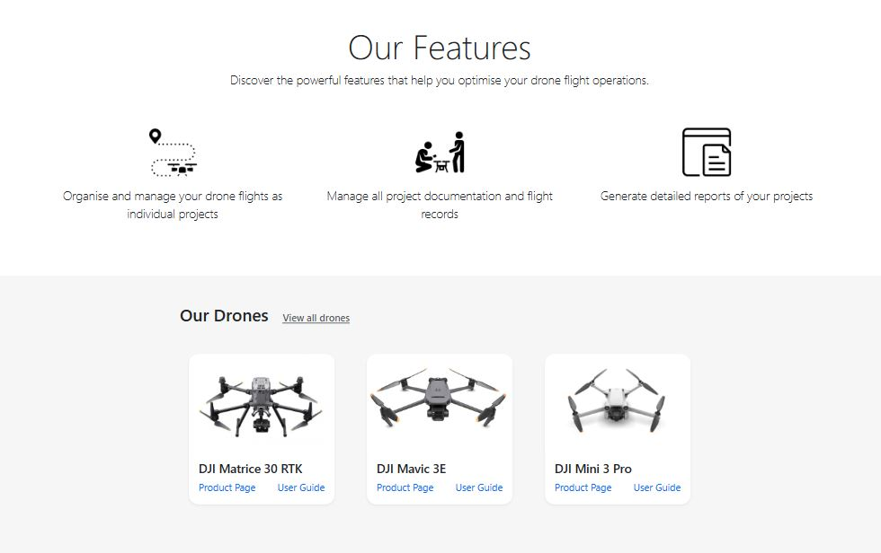
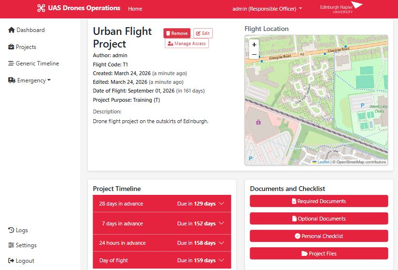
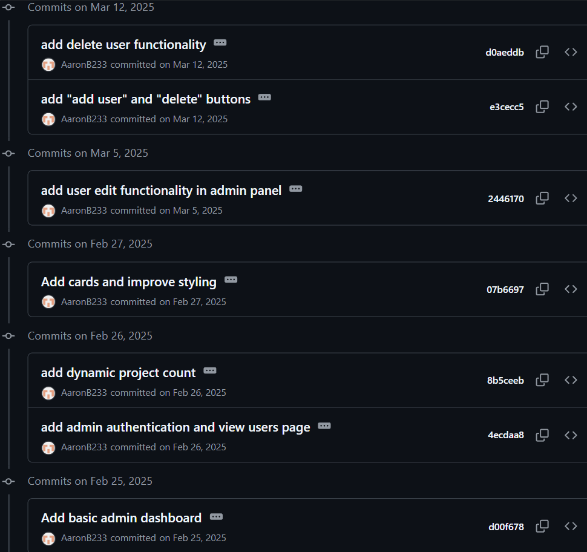
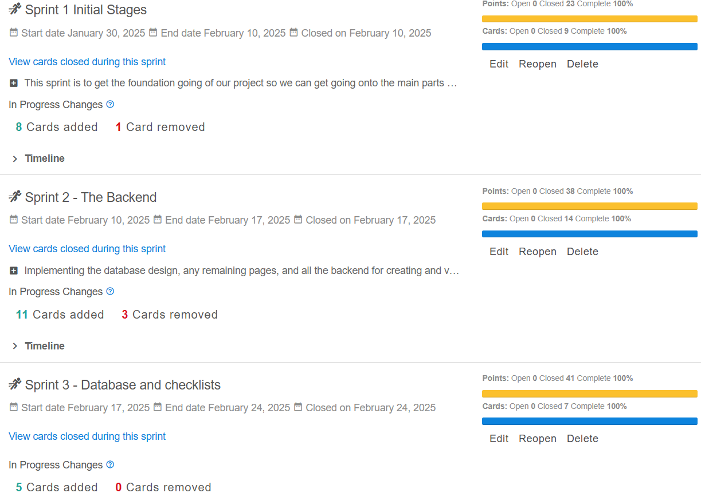
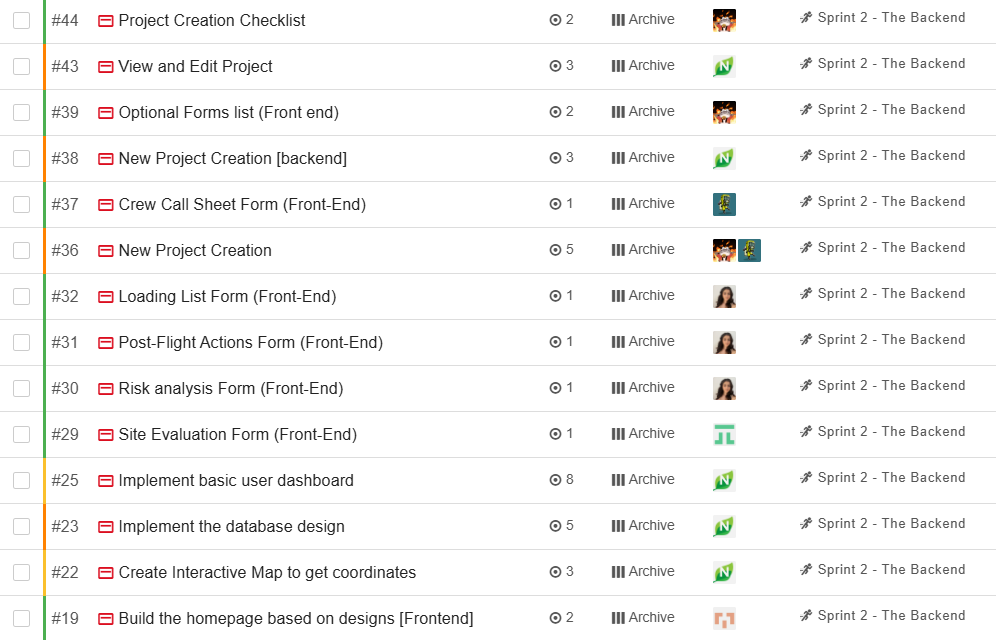
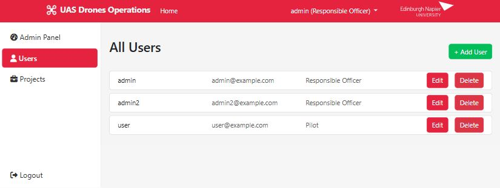
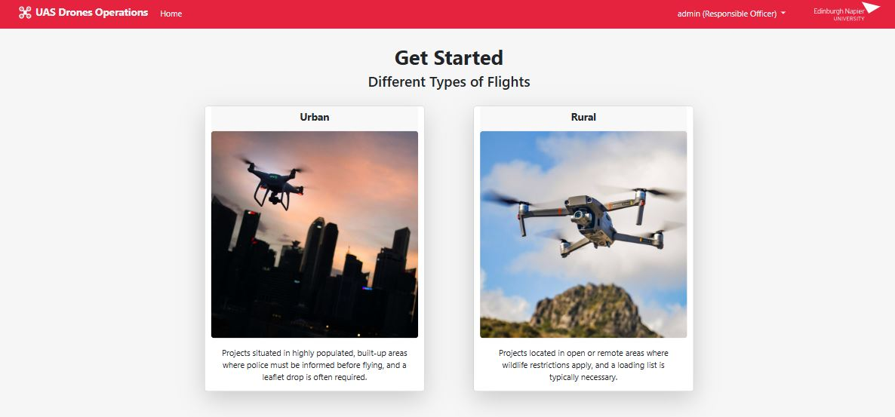

Project
This was a group project involving myself and five software engineering students. We were tasked with developing a web application for managing Edinburgh Napier University’s drone operations. Their existing process relied on word documents which was time-consuming and was error-prone. We created a centralised system using Python Flask and a relational database to streamline the process.
Tools
HTML (Bootstrap)
CSS
Python (Flask)
JavaScript
SQLAlchemy
The application was designed to guide users through the full lifecycle of a drone operation. Remote pilots could create a drone project through selecting a location on an interactive map or entering coordinates, entering flight details and completing the required forms. The application featured role-based access, admin dashboards and the ability to export documents to PDF. Admin users had access to an admin panel where they could view and manage project or user details. A timeline feature was designed and implemented to help users keep on track with the steps required before a flight because each flight project has different requirements.
The team was made up of six members, I was the only web development student and the rest of our team were all studying software engineering. As the only web development student, I was responsible for developing several key features of the application. Some of the key features I worked on include: the homepage, login system (role-based access), project creation workflow and parts of the admin panel such as user management functionality.
Please click here if you'd like to view the GitHub repository.

Admin Panel

Features and drones section of home page

View drone project page
Working in a team with students from a different course required me to quickly adapt to new tools and processes. At the start, I had limited experience with GitHub and had never used tools like Zube for sprint planning but over time I became much more confident using these tools. We met multiple times per week through Microsoft Teams to allocate tasks and discuss our progress as well as once a week with our main client. All of our work was pushed to feature branches in GitHub, we conducted weekly sprints using Zube, where we had a kanban board to break our projects into manageable tasks to complete within the week.

My GitHub commits for admin panel

First three sprints within Zube

Week 2 sprint task board with completed tasks
The project was a valuable experience and helped me develop both technically and professionally. I became much more confident working within a team using agile workflows, supporting others when needed and communicating new ideas. Gaining experience with collaboration tools like Zube and GitHub was useful and I continue to use them in current projects. My skills in Python and Flask also improved significantly through developing key features of the application. I learned the importance of regular communication which helped the project run smoothly and ensured we completed each task within the weekly sprint. Working with people from different backgrounds, required me to adapt and learn new ways of doing things which was a valuable experience. I also gained experience working with a real client, where meeting requirements and responding to feedback was essential in delivering an effective solution.

View/edit users page within admin panel

Initial project creation page